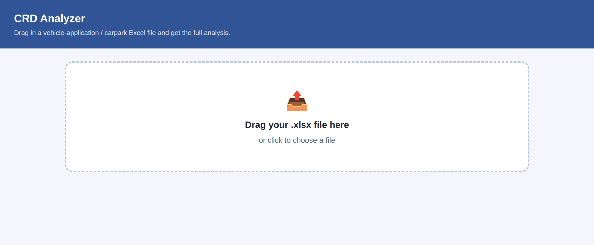
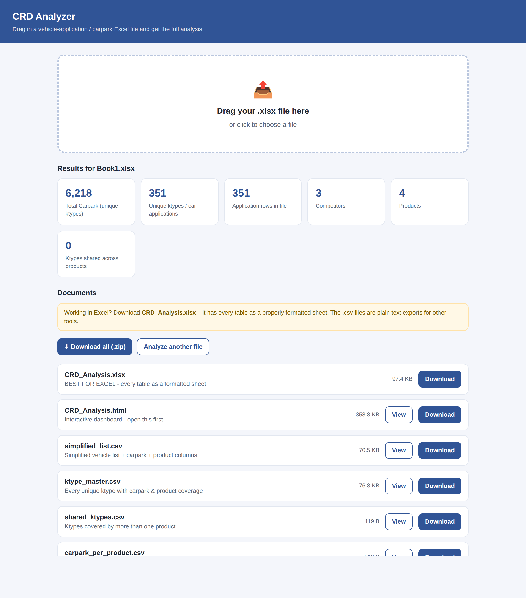
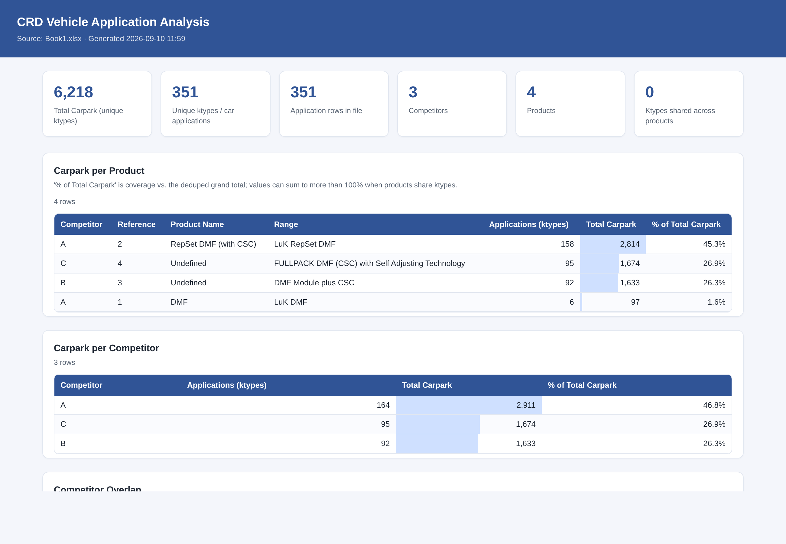
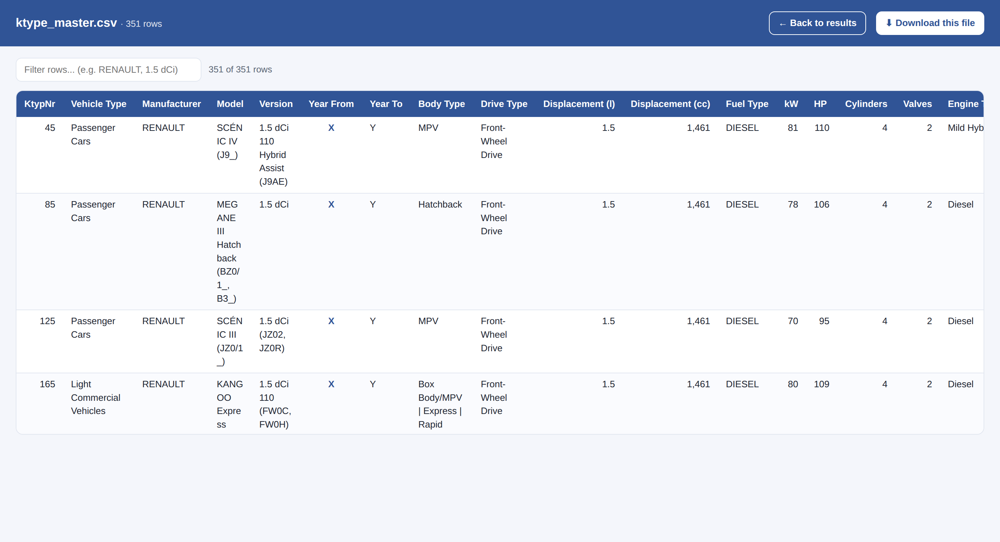

CRD Analyzer, rakip ürünlerin araç uygulama (ktype) ve carpark listelerini saniyeler içinde analiz eden bir masaüstü uygulamasıdır. Elle yapılması saatler süren şu soruları otomatik yanıtlar:
Sonuçları hem Excel çalışma kitabı, hem etkileşimli pano, hem de CSV olarak verir.
github.com/Alpay565/CRD-AnalysisCRD_Analyzer.exe çıkacaktır.CRD_Analyzer.exe tek başına çalışır;
bilgisayarınıza Python veya başka bir program kurmanıza gerek yoktur.
Dosyayı masaüstünüze koyabilirsiniz.
CRD_Analyzer.exe dosyasına çift tıklayın. Uygulama
varsayılan tarayıcınızda açılır.

Analiz etmek istediğiniz Excel dosyasını (.xlsx)
fare ile sürükleyip sayfadaki kesik çizgili alana bırakın.
Dilerseniz aynı alana tıklayıp dosyayı listeden de seçebilirsiniz. Analiz birkaç saniye sürer ve sonuçlar hemen aşağıda görünür.

Ekranın üst kısmındaki özet kartlar dosyanızın genel resmini verir: toplam carpark, tekil ktype sayısı, satır sayısı, rakip ve ürün sayısı ile birden çok üründe geçen ktype sayısı.
Altındaki listede üretilen 8 belge yer alır. Her satırda:
İşiniz bittiğinde sayfanın en altındaki Quit the app bağlantısına tıklayarak uygulamayı kapatabilirsiniz.
| Belge | Ne işe yarar |
|---|---|
| CRD_Analysis.xlsx | Excel için bunu kullanın. Bütün analizler ayrı ayrı, biçimlendirilmiş sayfalar hâlinde tek çalışma kitabında. |
| CRD_Analysis.html | Etkileşimli pano. Tarayıcıda açılır, tabloları ve carpark çubuklarını bir arada gösterir. |
| simplified_list.csv | Sadeleştirilmiş araç listesi: şablon sütun düzeni + carpark + ürün sütunları. |
| ktype_master.csv | Tekil her ktype; carpark ve ürün kapsaması ile. |
| shared_ktypes.csv | Birden fazla ürün tarafından kapsanan ktype'lar. |
| carpark_per_product.csv | Ürün bazında toplam carpark. |
| carpark_per_competitor.csv | Rakip bazında toplam carpark. |
| competitor_overlap.csv | Rakibe özel ve ortak kapsama karşılaştırması. |
CRD_Analysis.xlsx dosyasını indirin — sütun genişlikleri,
filtreler ve sayı biçimleri hazır gelir.
CRD_Analysis.xlsx dosyasını açtığınızda altta şu sayfaları görürsünüz:
| Sayfa | İçerik |
|---|---|
| Summary | Genel özet: toplam carpark, tekil ktype, rakip ve ürün sayıları, veriye dair uyarılar. |
| Carpark per Product | Her ürünün kaç araç uygulaması kapsadığı, toplam carpark ve yüzde payı. |
| Carpark per Competitor | Aynı bilgi rakip bazında. |
| Competitor Overlap | Her rakibin yalnızca kendisinde olan (Exclusive) ve başkalarıyla ortak (Shared) ktype/carpark dağılımı. Pazar boşluğu analizi için. |
| Ktype Master List | En ayrıntılı liste: her tekil ktype için araç bilgileri, motor kodu, ürün limitleri, carpark ve ürün kapsama sütunları. |
| Shared Ktypes | Yalnızca birden fazla üründe geçen ktype'lar. |
| Simplified List | Raporlama şablonuyla aynı sütun düzeninde sade araç listesi (+ carpark). |

CRD_Analysis.html panosunda da yer alır.Ktype Master List ve Simplified List sayfalarında, her ürün için bir sütun bulunur. Sütun başlığı şu biçimdedir:
Rakip: Referans - Ürün Adı örn. SCHAEFFLER LUK: 415 0000 10 - LuK RepSet DMF
Bir satırdaki (araçtaki) x işareti, o ürünün o aracı kapsadığı anlamına gelir. Birden fazla x varsa, o araç birden fazla ürün tarafından kapsanıyor demektir:
| Ktype | Araç | A: 1 - LuK DMF | B: 3 - DMF Module | C: 4 - FULLPACK |
|---|---|---|---|---|
| 109340 | VW POLO V 1.0 TSI | x | x | x |
| 109492 | VW GOLF VI 1.6 | x | ||
| 112018 | AUDI A3 1.9 TDI | x | x |
Yukarıdaki örnekte 109340 numaralı araç üç ürün tarafından da kapsanıyor; 109492 ise yalnızca B ürününde var.
| Kavram | Anlamı |
|---|---|
| Ktype | Avrupa'da bir araç tipinin (marka + model + versiyon + motor) benzersiz kimlik numarası. |
| Carpark | O araç tipinin yolda olan (parkta) adet sayısı. Pazar büyüklüğünü gösterir. |
| Referans | Ürünün sipariş edildiği parça numarası. |
Excel dosyanızın ilk sayfasında bir başlık satırı olmalı ve bu satırda en azından şu iki sütun bulunmalıdır:
KtypNr — araç kimlik numarasıCarpark per KtypNr — o araca ait carpark adediBunların yanında şu sütunlar da tanınır ve varsa kullanılır:
Generic Product Designation, Reference, Competitor, Product Name, Range, Vehicle type, Manufacturer, Car Model, Version, Model year from, Model year to, Body type, Drive type, Displacement (l), Displacement (ccm techn.), Fuel Type, kW, Horse Power, Cylinders, Valves, Engine Type, Engine codes, Limitations
Uygulamanın yanı sıra, depoyu bilgisayarınıza indirdiyseniz şu yollar da vardır (bunlar için Python kurulu olmalıdır):
Excel dosyanızı run_analysis.bat dosyasının üzerine
sürükleyin. Sonuçlar yanındaki analysis_output klasörüne yazılır.
Komut İstemi'nde (Command Prompt), dosyaların bulunduğu klasörde:
python analyze_crd.py DOSYANIZ.xlsx
Sonuçları başka bir klasöre yazmak için:
python analyze_crd.py DOSYANIZ.xlsx --outdir sonuclar_2026
Uygulamayı (tarayıcı arayüzünü) Python ile açmak için:
python crd_app.py
| Sorun | Çözüm |
|---|---|
SyntaxError: invalid syntax ve ekranda >>>
işareti var |
Komutu Python'un içine yazmışsınız. >>> Python'un
kendi istemidir. exit() yazıp çıkın ve komutu Komut İstemi
(siyah C:\...> penceresi) içinde çalıştırın. |
'python' is not recognized |
python yerine py yazmayı deneyin. Sorun sürerse
Python'u python.org adresinden kurarken “Add Python to PATH”
kutusunu işaretleyin. |
| CSV dosyası Excel'de tek sütunda açılıyor | Dosyalar bunu önleyecek biçimde hazırlanmıştır. Yine de olursa
Veri → Metinden/CSV'den yolunu kullanıp ayırıcı olarak
virgül seçin — ya da doğrudan CRD_Analysis.xlsx
dosyasını kullanın. |
| “Windows kişisel bilgisayarınızı korudu” uyarısı | Ek bilgi → Yine de çalıştır. Uygulama dijital olarak imzalanmadığı için çıkar. |
| Tarayıcı açılmadı | Açılan siyah pencerede yazan http://127.0.0.1:... adresini
kopyalayıp tarayıcınıza yapıştırın. |
| Uygulama nasıl kapatılır? | Sayfanın altındaki Quit the app bağlantısına tıklayın veya siyah pencereyi kapatın. |
| “Could not analyze...” hatası | Dosya .xlsx değil, bozuk, ya da başlık satırında
KtypNr sütunu yok. Bkz. bölüm 10. |

Uygulama tamamen kendi bilgisayarınızda çalışır. Tarayıcıda açılması onu
bir internet sitesi yapmaz; adres 127.0.0.1 yani kendi makinenizdir.
Dosyalarınız hiçbir sunucuya gönderilmez, internet bağlantısı gerekmez.